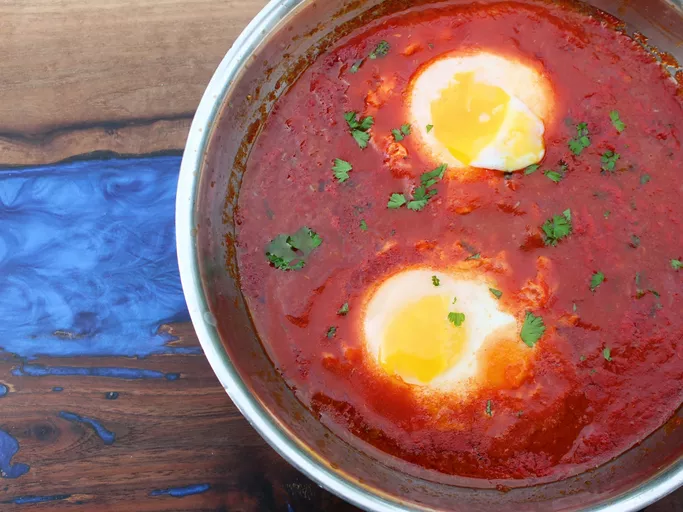

Uova In Purgatorio

Description:
A traditional italian recipe that can be eaten at any time of the day.
A hearty dish of eggs in a garlic and tomato sauce.
Ingredients
- 2 tbsp olive oil
- 1 garlic clove
- 3 black olives, pitted and chopped
- 1 tsp capers
- 1 anchovy fillet
- 200g crushed tomatoes
- 1/2 cup water
- 1 sprig of parsley
- Pinch of salt (to taste)
- 2 eggs
Steps
- Heat oil in a deep frypan
- Add garlic, olives, capers and anchovy. And cook for 1-2 minutes.
- Add tomatoes and water, bring to a boil and then simmer for 10 minutes.
- Add parsley and season with salt.
- Gently add eggs into tomato sauce without breaking the yolks.
- Cook for 3-5 minutes.